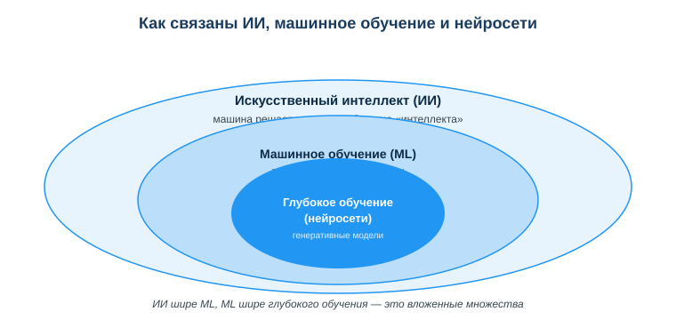
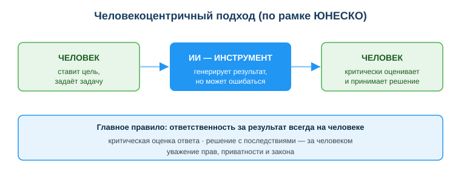

Введение в ИИ, машинное обучение и человекоцентричный подход к ИИ
Практическая ситуация
Ты пишешь код и просишь ИИ-ассистента подсказать функцию. Он уверенно «называет» метод библиотеки — ты вставляешь его, запускаешь, а код падает: такого метода вообще нет. ИИ не соврал нарочно — он просто предсказал «правдоподобное» продолжение. Это и есть галлюцинация.
«Искусственный интеллект» сегодня везде: в поиске, переводчике, ленте соцсетей, в ассистенте, который пишет код. Но что это на самом деле, чем ИИ отличается от обычной программы и почему он иногда «уверенно врёт»? Главная рамка урока: ИИ — мощный инструмент, но ответственность за результат всегда на человеке.

Что ты научишься делать
- объяснять простыми словами, что такое ИИ и машинное обучение;
- отличать обычную программу от системы на машинном обучении;
- распознавать галлюцинации генеративного ИИ и проверять его ответы;
- применять человекоцентричный подход при работе с ИИ.
Почему это важно
ИИ перестал быть «технологией будущего» — он уже встроен в инструменты, которыми ты пользуешься каждый день. Понимать, как он устроен и где ошибается, — это базовая цифровая грамотность, а не узкая специализация.
Связь с профессией: разработчик всё чаще пишет код вместе с ИИ-ассистентом. Чтобы не тащить в проект несуществующие функции и чужие ошибки, нужно понимать ограничения ИИ и проверять его ответы по документации. Это превращает ИИ из источника багов в реальное ускорение работы.
Учимся читать схему
Посмотри на схему вложенности выше. Ответь на вопросы:
- какое понятие самое широкое, а какое — самое узкое?
- машинное обучение — это часть ИИ или наоборот?
- к какому из трёх кругов относятся современные генеративные модели?
Главное понятие
Машинное обучение (ML) — подход, при котором программа учится на данных и сама находит закономерности, а не работает по заранее прописанным правилам «если — то».
Проще: обычной программе правила пишет программист, а модель ML «выводит» правила сама из множества примеров.
ИИ, машинное обучение, нейросети
- Искусственный интеллект (ИИ) — способность машины выполнять задачи, требующие «интеллекта».
- Машинное обучение (ML) — программа учится на данных, а не работает по жёстким правилам.
- Нейросети (глубокое обучение) — метод ML; на них работают современные генеративные модели.
Обычная программа: «если X, то Y» — правила пишет программист.
ML: показываем много примеров → модель сама находит закономерности (например, фильтр спама на размеченных письмах).
Генеративный ИИ
Модели (ChatGPT, Copilot, Gemini) генерируют текст, код, изображения — предсказывают «что обычно идёт дальше». Отсюда сила (быстро создаёт) и слабость — галлюцинации (уверенно выдаёт фактически неверное).
Человекоцентричный подход
- человек критически оценивает результат ИИ;
- решения с последствиями принимает человек;
- использование ИИ уважает права, приватность и закон.

Мини-кейс
Студент спросил ИИ, и тот «назвал» функцию, которой нет в библиотеке. Код не запустился. Причина: галлюцинация. Решение: проверять ответы ИИ по документации, а не принимать на веру.
Разбор типичной ошибки
Ошибка. Считать ИИ «всезнающим разумом», который всегда прав, и переложить на него ответственность за решение.
Почему это ошибка. Генеративный ИИ — статистическая модель предсказания: она не «понимает» смысл и регулярно ошибается (галлюцинации). Отвечает за результат человек, а не инструмент.
Как правильно. Относись к ИИ как к быстрому, но неточному помощнику: проверяй ответы по документации, а решения с последствиями принимай и проверяй сам.
Практика
Ответь письменно:
- Объясни на примере фильтра спама разницу «правила vs обучение на данных».
- Опиши своими словами, что такое галлюцинация ИИ, и приведи пример из разработки.
Образец (часть ответа на пункт 1): «Вместо того чтобы вручную писать тысячи правил вида „если в письме слово ‘выигрыш’ — это спам“, модели показывают много размеченных писем (спам / не спам), и она сама находит признаки спама».
Самопроверка
- Я могу объяснить разницу между обычной программой и системой на ML.
- Я знаю, что такое галлюцинация генеративного ИИ и почему она возникает.
- Я понимаю принцип человекоцентричного подхода и где лежит ответственность.
Подумай
- В каких сервисах, которыми ты пользуешься каждый день, уже работает ИИ? Что он там делает?
- Почему опасно сдавать код или текст от ИИ без проверки — и чем это грозит именно в профессии разработчика?
Итог
Что теперь делать:
- различай: обычная программа работает по правилам, ML учится на данных;
- помни про вложенность: ИИ ⊃ машинное обучение ⊃ глубокое обучение (нейросети);
- помни про галлюцинации генеративного ИИ — всегда проверяй результат;
- используй ИИ как усилитель, ответственность оставляй за собой; уважай приватность и закон.
Полезные ссылки
Источник: материалы по применению ИИ и цифровой грамотности (DigComp 2.2; UNESCO AI Competency Framework, 2024); обзорные публикации по ИИ и машинному обучению.
Разработал: преподаватель ИКТ, магистр управления и информационной безопасности Калиаскаров Д.А.
Материал одобрен к использованию в обучении решением Педагогического совета ТОО «Колледж Хекслет Казахстан».